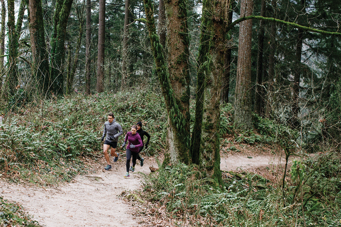

The Wildwood trail is probably the most popular trail in the Portland Metro area, located in the heart of the beautiful Forest park, in Downtown Portland. Its 30 ish miles of rolling, dense forested terrain is sure to bring a smile on your face.
 Home